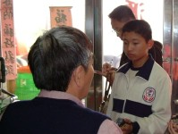
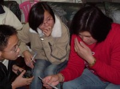

1.我們參加的競賽類別是：地方觀光資源
2.我們的『地方社區』說明：
線西，是彰化縣西北方的靠海小鄉鎮，當地居民從事農漁業居多，是個民風純樸的地方，農漁產品有水稻、鴨蛋、鵪蛋、荸薺、珍珠蚵等。我們的家鄉是一沿海平原，海邊景色美不勝收，常吸引許多釣客前來，假日更是車水馬龍，熱鬧極了。位於線西鄉與鹿港鎮交界的塭仔港，向來以販售新鮮漁貨聞名；而「肉粽角」海水浴場更是遊客最多的休閒勝地。
3.專題研究計劃概要：
線西因其地理位置而有「風頭水尾」之稱，位在彰濱海埔新生地生成的沙灘，及其海濱風光常常吸引不少外地觀光人潮，最著名的莫過於肉粽角及塭仔港。
近來線西海濱欲轉型為觀光休閒的場所，在擁有良好的自然景色和漁港風光的先天條件下，卻無良好的規劃和設備搭配。於是我們蒐集了各種資料、實地探訪，並訪問相關人員，為線西海濱的未來提出新願景，期許能打造出屬於線西海濱特有的觀光風貌！
4.我們的網際網路環境：
在學校裡，採用以光纖及ADSL兩條線路來連接網際網路，再分享到全校各辦公室及教室供師生使用；在家裡大多採用ADSL寬頻，來進行資料查詢和上傳。
5.我們所遭遇和克服的難題：
1. 與時間賽跑--課業與比賽的壓力
我們這群國三生最大的壓力就是即將到來的基本學力測驗，所以我們往往必須利用零碎時間思考、討論，常常在下課或午休時間討論，有時還必須分成小組活動。這一些是必須要付出時間與心血的，有時候也會因為想不出來而會有放棄的念頭，但是在老師的指導鼓勵下，讓我們更有信心毅力繼續奮鬥下去。
2. 從巨觀到微觀
為了充份了解我們的故鄉，我們在實地探勘、訪問上下了許多功夫，我們總共實地走訪線西海濱數十次，剛開始是簡單認識，漸漸地針對小範圍更加細膩的觀察、分析、訪問，每一趟走訪都花了半天以上。
3. 寫作問題
藉由分工合作，我們一次又一次的克服所有我們所遇到的難題。在資料整理方面，因為不常寫文章、做報告，所以常常無法融會貫通，也抓不到主題的要義。但經過這半年來，至少我們能用自己的話寫下自己對家鄉的情感。並藉由不斷討論、取長補短、修改主題架構，希望能夠介紹出線西海濱的特色，即使是標題的訂定，都花了我們好幾天的時間才確定呢。這個活動讓我們不只對家鄉有更深入的參與和了解，同時也在自己的人生里程上獲得了更多寶貴的經驗。
6.心得箴言：
在線西生活了十多年，我們總是不斷羨慕其他城市的繁榮、美麗，但是我們卻忘了用心去看自己的家鄉。是的！我們必須更用心去體會家鄉的美好，更加珍惜，否則這些美好的事物將隨著開發過眼即逝。
這次的專題研究，我們最大的收穫莫過於從受訪者身上學到對事情的堅持與毅力。許多人感恩的態度、對線西的熱愛、認真的工作態度及樂觀的個性，不怕環境的困難，勇敢追求…，這些人格特質都讓我們感動。回頭想想身為學生的我們，在不斷追求物質享受的社會中，或許我們應該用不同的角度來看待自己的家鄉，對於這個復育我們成長的偏遠小鄉鎮，投入更多的情懷、感謝與熱愛。藉由這次活動，我們深深體會到「美，到處都有，對於我們的眼睛，不是缺少美，而是缺少發現。」也讓我們在創作上，學到了許多技巧，或許碰到許多從來沒遇過的問題，但我們也努力的把這些問題都克服了，這一切的一切，都是經驗的累積，也將成為我們永久的回憶。 |




 |